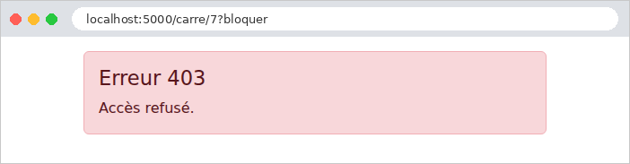
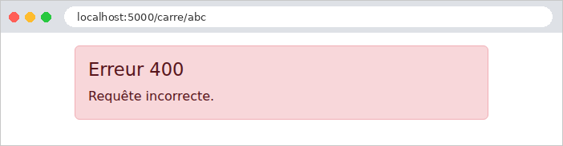

7. The Lifecycle of a Request
Between the arrival of a request and the dispatch of its response, [Flask] goes through several steps, and the application can intervene at each one. We’ve already encountered several of these: path variable converters (examples 02 and 12), the [before_request] functions (examples 16, 22, and 23), and error handlers (examples 08 and 12). This chapter combines them into a single example, which displays a message in the console at each step so you can observe the order:

- 1 and 8. The WSGI middleware. [WSGI] (*Web Server Gateway Interface*) is the standard that connects a web server written in [Python] to an application. From the server’s perspective, a [Flask] application is simply a callable object that receives the request description and generates the response. Middleware is a similar type of object that wraps around the application: it intercepts the request before it reaches [Flask] and the response afterward. It is the equivalent of [Java] servlet filters;
- 2. Routing. [Flask] searches for the route that corresponds to URL, and the route converters transform the path variables;
- 3 and 4. The [before_request] functions, executed in the order in which they are registered. If any of them returns a response (or throws an exception), processing stops there: the action is not called. This is where we verify that a user is logged in (next chapter);
- 5. The action, and the view it generates;
- 6. The [after_request] functions, which receive the response, can modify it (add a header or a cookie), and must return it. They are executed in the reverse order of their registration;
- 7. The [teardown_request] functions, which are always executed at the very end, even if an exception has interrupted processing. They can no longer modify the response; their purpose is to free up resources (such as closing a database connection);
- x. Error handlers ([errorhandler]): An exception thrown by a [before_request] function, by an action, or by a view is handed off to the handler registered for its class, which generates an error response. This response then passes through the [after_request] functions, just like a regular response.
These are the equivalents of the [Spring MVC] interceptors and the [ASP.NET Core MVC] action filters. The functions [before_request], [after_request], and [teardown_request] are often referred to as hooks.
7.1. Example 24: The steps involved in processing a request
The application has only one action, which calculates the square of an integer: [/carre/7]. Depending on URL, it either succeeds or fails in various ways.
7.1.1. The WSGI middleware: filters/journal.py
- Line 7: The middleware receives the application it wraps;
- line 10: the special method [__call__] makes the object callable: [middleware(environ, start_response)] executes this method. This is the signature imposed by [WSGI]: [environ] is a dictionary that describes the request (the method in [REQUEST_METHOD], the path in [PATH_INFO], the parameters in [QUERY_STRING], the headers, etc.) ; [start_response] is a function provided by the server, which the application calls to report the response code and headers;
- lines 12–17: the middleware displays the request. This is message #1: nothing has happened yet in [Flask];
- lines 22–24: To determine the response code, the middleware passes one of its own functions to the application—instead of [start_response]—which records the code as it passes through, then calls the actual function. This is an internal function (defined within another function): it has access to the variables of the function that contains it, in this case the list [statut];
- line 27: the call to the wrapped application: the rest of the processing takes place within this call;
- line 28: message No. 8, when [Flask] has finished.
A middleware component operates at the level of [WSGI]: it is unaware of [request], [g], or the routes of [Flask]. It is used for processing that applies to all requests, regardless of the application: logging, compression, handling a proxy, etc. [Werkzeug] provides a few of these, such as [ProxyFix], which corrects the client’s address when the application is located behind a proxy server (the case study discusses this in relation to the clients’ IP address).
7.1.2. The converter: filters/entier.py
A converter (example 12) that accepts any portion of a path ([[^/]+]: one or more characters other than [/]) and converts it in its entirety, or to [None] if it is not a valid path. Unlike [<int:n>], which would return a 404 page for [/carre/abc], here the action will determine the outcome. It displays message #2.
7.1.3. Marked actions: filters/marques.py
The [before_request] functions run before all actions. Often, a process applies only to certain actions. A simple way to specify them is to mark them:
These two decorators do not change the action itself: they add an attribute to it (in [Python], a function is an object to which attributes can be added), and leave it unchanged. The [before_request] functions will search for these markers on the action targeted by the request.
7.1.4. Brackets: filters/crochets.py
- Lines 10–11: the action that will handle the request. After routing, [request.endpoint] contains the name of the selected route ([calcul.carre]: the blueprint name, a period, the function name); [current_app.view_functions] is the dictionary that maps each name to its corresponding function. If no route matches, [request.endpoint] is set to [None], and the function returns [None];
- lines 15–16: Is the flag set? [getattr(objet, nom, défaut)] returns the given name attribute, or the default value if it does not exist (or if the object is [None]);
- line 19: The callbacks are registered by a function called by [app.py];
- lines 24–28: the first bracket, message #3: for an action marked [bloquer], the parameter [?bloquer] of URL causes a 403 error (*Forbidden*, access denied): [abort] throws an exception, which interrupts processing;
- lines 31–35: the second block, message no. 4: for an action marked [chrono], the start time is stored in [g]. [time.perf_counter()] is a precise clock designed to measure durations;
- lines 39–43: message #6. The function receives the response and must return it (possibly modified). [reponse.status_code] is the response code;
- lines 47–52: message #7, containing the elapsed time since hook #4. The ["debut" in g] test verifies that the measurement has started. The function receives the exception that interrupted processing, if there is one that has not been handled, and [None] otherwise.
7.1.5. Error handling: filters/erreurs.py
- Lines 9–13: an exception handler for the [ValueError] class (and its subclasses): an “unexpected” error, converted into a “custom” error page with status code 500 (*Internal Server Error*). The exception message is displayed in the console, but not on the page: it may contain internal details that are not relevant to the user;
- Lines 17–20: a handler for all HTTP errors. [abort(400)], [abort(403)], a URL for a missing route (404), a forbidden method (405): all throw an exception of a subclass of [HTTPException] ([BadRequest], [Forbidden], [NotFound]...), which carries its code in the [code] attribute. This single handler therefore replaces all English error pages from [Werkzeug] with ours.
For an exception, [Flask] selects the handler registered for the class closest to its own. You can also register a handler for a specific code: [@app.errorhandler(404)]. An exception that has no handler becomes a 500 error: in debug mode, this is the debug page (example 03); without debug mode, it is the standard 500 error page or the page from the handler registered for code 500.
7.1.6. The controller and the error page
- lines 9–11: the route uses the [entier] converter; the action bears both decorators. Order matters here as well (example 12): decorators are applied from bottom to top, and the route decorator must be the last one applied (the first one written) to register the decorated function;
- line 15: a parameter that is not an integer: error 400;
- line 17: the number 13 causes an “unexpected” error;
- line 18: the normal case.
The error page receives the error code and displays an appropriate message.
7.1.7. Configuration: app.py
- Line 21: the converter;
- Lines 25–27: the callbacks and error handlers;
- line 29: the middleware. [app.wsgi_app] is the method by which the server calls the [Flask] application; it is replaced by the middleware, which will call the old one. We wrap [app.wsgi_app] rather than [app] itself so that the variable [app] remains the object [Flask], with its methods ([run], [route]...).
7.1.8. Execution
The normal case, [/carre/7]:

The server console displays the eight steps, in order:
The last line is the development server log entry for [Werkzeug], written after the response was sent. A blocked access, [/carre/7?bloquer]:

The first call raised an exception: the second call and the action were not executed. The error response, generated by the handler, passes through [after_request]; [teardown_request] was called but did not display anything, as the operation did not begin. A parameter that is not an integer, [/carre/abc]:

This time, the action was called—[None]—and it raised error 400. An “unexpected” error, [/carre/13]:

The exception was handled by its handler: the user sees the “custom” error page, not the debug page, even though debug mode is enabled. Finally, a URL that does not correspond to any route, [/inconnu]:
Routing failed: no route, no converter, no action. The callbacks were executed, but nothing was displayed because they could not find a target action. The 404 page is ours:
Let’s focus on the essentials. The [before_request] functions are the right place for checks common to many actions (Is the user logged in? Do they have permission to access this action?): the next chapter uses them for authentication. Error handlers ensure that the user never sees a technical page, regardless of the error: the case study includes one for each type of error.